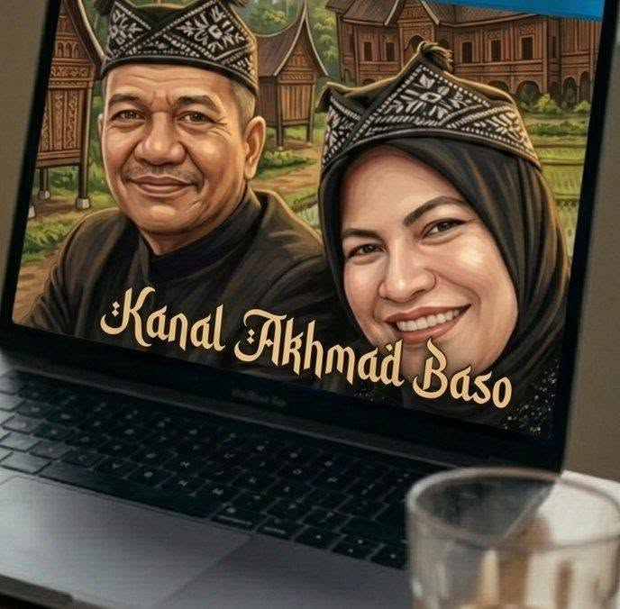

Minggu, 7 Juni 2026
Portal informasi warga Palopo dan Tana Luwu

Kanal Akhmad Baso
Berita lokal, budaya, dan suara warga
Beranda
Terkini
Publik
Budaya
Komunitas
Kontak Redaksi
Admin
Kategori
Berita Terkini
Kumpulan berita yang sudah diterbitkan redaksi Kanal Akhmad Baso.